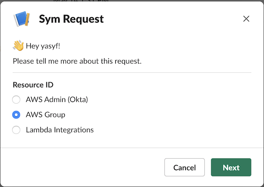

Hey! I'm Yasyf, CEO at Sym. Today I want to walk you through setting up a simple ephemeral infrastructure access control as a Sym Workflow. If you want to learn more about how Sym can help you accomplish your compliance goals, please check out our product overview datasheet.
Context
Let's set up our use case. I'm an engineer at Healthy Health, a 100 person healthtech startup. We integrate with health systems, and in the process end up with lots of patient PHI, so we have to be HIPAA-compliant. Additionally, our customers require that we pass annual SOC 2 Type 2 audits, as well as routine vendor security assessments.
To increase the security and audibility of infrastructure access at Healthy Health, we've decided to put a peer-approval process around sensitive resources, with a low default access level, and short grants of escalated privileges upon approval. This happens to satisfy many of our compliance requirements, namely:
- HIPAA Privacy Rule: Minimum Necessary Requirement
- HIPAA Security Rule: Access Authorization, Unique User Identification, Automatic Logoff
- SOC 2: Common Controls 4 (Monitoring Activities) and 6 (Logical and Physical Address)
Workflow
Without Sym, we might decide to implement our approval and access workflow using JIRA tickets, and a single task queue that is owned by the SecOps team. This would require SecOps to manually review requests, escalate engineers, and revoke privileges at a later date. Such a workflow is prone to long turnaround times for engineers, wasted time for ops, and access drift as a result of forgotten grants.
With Sym, we can easily implement a compliant policy that distributes approvals and gets engineers short-lived access in seconds, while keeping ops out of the loop.
When you're done with this tutorial, you'll have a smooth approval flow that you can initiate from your command line, with approvals granted via a message in a Slack channel, and fully-automated privilege escalations.
If you'd rather jump straight into the code, you can find it on GitHub at symopsio/docs.
For the purposes of this tutorial, we'll assume that your company has already set up Sym at an organizational level. This includes integrating with your IDP to obtain a user mapping.
To complete this tutorial, you should install Terraform, and make sure you have a working install of Python 3.
You'll also need an escalation strategy. An escalation strategy is how we tell Sym what to do when an access request has been approved. The easiest way to get Sym up and running is to have an AWS IAM Group whose members can assume a privileged role. We'll walk you through this if you don't already have it set up. Sym also supports escalation via Okta, and any custom lambda via our Serverless Templates.
If you'd like to play around with connecting Okta with IAM for SSH, you should check out our
terraform-okta-ssm-modules posts.
Let's create a sample escalation strategy for use in this tutorial. Please login to the AWS Console and complete the following steps.
- Create an IAM Role named
SymDemoEscalated. - In your terminal, run
aws iam get-role --role-name SymDemoEscalated.
Note theRoleId, which should begin withAROA. - Create an S3 bucket named
SymDemo-YourNameHere, and attach the below S3 Bucket Policy, which restricts access to theSymDemoEscalatedRole. - Create an IAM Group,
SymDemoAdmins, and attach the below IAM Group Policy, which allows the group to assume theSymDemoEscalatedRole.
Now, the only users who will be able to access our S3 bucket are the ones in the SymDemoAdmins IAM Group! This group will be our escalation strategy.
S3 Bucket Policy
{
"Version": "2012-10-17",
"Statement": [
{
"Effect": "Deny",
"Principal": "*",
"Action": "s3:*",
"Resource": [
"arn:aws:s3:::SymDemo-YourNameHere",
"arn:aws:s3:::SymDemo-YourNameHere/*"
],
"Condition": {
"StringNotLike": {
"aws:userId": [
"AROAEXAMPLEID:*"
]
}
}
}
]
}
IAM Group Policy
{
"Version": "2012-10-17",
"Statement": [
{
"Effect": "Allow",
"Action": "sts:AssumeRole",
"Resource": "arn:aws:iam::ACCOUNT-ID:role/SymDemoEscalated"
}
]
}
Let's first install the Sym CLI helper.
$ brew install sym
==> Downloading https://homebrew.bintray.com/bottles/sym-3.04.mojave.bottle.tar.gz
######################################################################## 100.0%
==> Pouring sym-3.04.mojave.bottle.tar.gz
üç∫ /usr/local/Cellar/sym/3.04: 65 files, 82.9KB
We'll have to login before we can do anything else. Sym also supports SSO, if your organization has set it up.
$ sym login
Sym Org: healthy-health
Username: yasyfm
Password: ************
MFA Token: ******
Success! Welcome, Yasyf. ü§ì
Next, let's create a new Sym Workflow called infra_access. We'll use the approval template: one of many Sym-provided templates to explore.
sym flow new infra_access --template=hello-world
You'll notice that this creates a infra_access directory with two files: infra_access.tf and infra_access.py. The Terraform file is where we will declare the resources and configuration for this workflow, and the Python file is where we will put our custom workflow logic.
Let's take a look at infra_access.tf.
provider "sym" {
org = "healthy-health"
}
resource "sym_flow" "infra_access" {
handler = {
parent = "sym:approval"
hooks = file("infra_access.py")
}
meta = {
strategies = sym_strategies.escalation_strategies
}
}
resource "sym_strategies" "escalation_strategies" {
// Add your escalation strategies here
}
The sym provider provides a sym_flow resource, which you can use to define a new Sym Workflow. There are two required keys, handler and params.
Handler
The handler key defines the structure of the workflow. The handler must specify a parent template (in this case, sym:approval).
The sym:approval template gives the foundation for an approval workflow in Sym. There are three main steps in this flow: the request, the approval, and the escalation. These steps can be parameterized and customized to fit your needs.
The handler can also optionally specify hooks: a file with code that modifies the steps of the workflow. Our hooks will be defined in the infra_access.py file, which we will explore in the next section.
Params
The params key supplies the declarative parameters for our workflow. The sym:approval template defines one required parameter, strategies, which provides the configuration for your escalation strategies. We will add a strategy here after exploring the hooks.
Workflows in Sym are composed of a series of pre-defined steps. Sym has three imperative mechanisms for modifying the logic of a workflow: @hook, @reducer, and @action.
hooksoccur before key steps of the workflow, and offer the opportunity to bypass, short-circuit, or alter the flow of steps, by emittingevents.reducerstake the current state of the workflow as input, and return a single value (whose type depends on the specific reducer) to a given step.actionsare opportunities to execute additional side effects after a step,
The sym:approval template defines five steps (prompt, request, approval, escalate, denial), each with an on_* hook, and a after_* action. The template also defines one reducer, get_approver, which must be supplied.
Let's take a look at infra_access.py.
from sym.annotations import hook, action, reducer
from sym import slack
@reducer
def get_approver(event):
raise NotImplementedError
@hook
def on_prompt(event):
"""
Executed before the requesting user is prompted for details about their request.
"""
pass
@action
def after_prompt(event):
"""
Executed after the requesting user is prompted for details about their request.
"""
pass
...
As we expected, the hooks and actions are optional, but we are missing a required implementation for the get_approver hook. This makes sense—Sym needs to know where to route access requests!
Let's go ahead and implement get_approver. For the purposes of this demo, let's keep it simple and assume that we're okay with anyone on the Engineering team approving access requests.
from sym import slack
@reducer
def get_approver(event):
return slack.channel("#eng")
With this simple addition, we now only have one piece left for a working demo: the escalation strategy.
Let's hop back over to our infra_access.tf file.
In the escalation_strategies block, let's add a aws_strategy which allows the user to escalate via the IAM Group (SymDemoAdmins) we set up earlier.
resource "sym_strategies" "escalation_strategies" {
aws_strategy {
id = "aws"
label = "AWS"
allowed_values = ["SymDemoAdmins"]
}
}
That's all!
There are two steps to validating your workflow locally. First, we can validate our Terraform config.
$ terraform validate
Success! The configuration is valid.
Next, we can lint and validate our Python code. Sym's CLI has a validate command to help with this.
$ sym validate
✅No Python syntax errors!
✅All required hooks and reducers are implemented!
✅All references exist and are valid!
Sym integrates with Python's unittest library to allow for easy testing of workflows.
Deploying a workflow with Sym's Terraform provider is simple: just run terraform init && terraform apply.
Terraform will create a Workflow in Sym, and upload the config and Python code associated with it. It will also create a cross-account Role in your AWS account for Sym to assume in order to move users into and out of the SymDemoAdmins IAM Group. The ARN for this role will automatically be saved in Terraform's outputs, and sent to Sym.
We can test our new workflow by using the Sym CLI to create an event in the Sym API. This will cause infra_access to run end-to-end, so get ready to check Slack!
sym flow trigger --name=infra_access
{
"type": "event",
"name": "TRIGGER_INFRA_ACCESS",
"fqn": "event:symops:yasyfm:infra_access:TRIGGER_INFRA_ACCESS",
"created_at": "2020-03-27T05:35:23",
"uuid": "1830FD4C-2992-4083-B7EC-B0BE644EFC11"
}
If everything worked, the event was emitted, and you should now have a Slack DM from Sym!
Propmt

Select the SymDemoAdmins group from the modal, then click "Next".

Request
You should now see an approval request appear in the #eng channel.
Approval
Get someone else to click the "Approve" button—it won't work if you try to approve yourself!
Nice, we did it! You've successfully completed the core of the tutorial. Read on if you want to explore some of Sym's more powerful features.
For example, by default, your user will stay in the escalated group for one hour. Our later sections walk through how to add an expiration field to the request modal, and use it in a reducer.